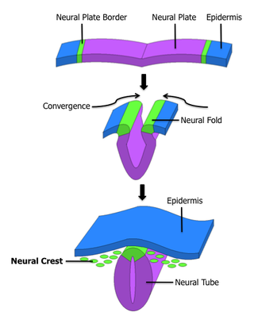
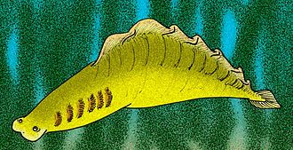
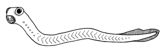
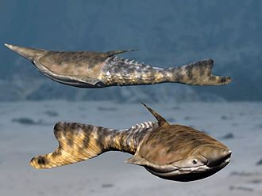
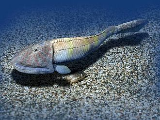
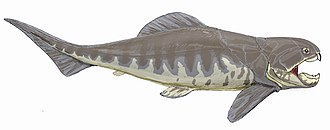
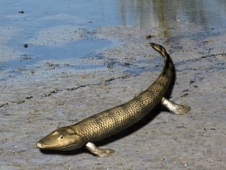

Úvod
Obratlovci (Vertebrata, alternativně též Craniata, „lebečnatí“) jsou podkmen strunatců, u kterých došlo k vytvoření vnitřní chrupavčité nebo později kostěné kostry přítomné alespoň ve formě lebky a obratlů. Obratlovci se dále vyznačují zřetelnou hlavovou částí, která nese smyslové orgány (čichové, zrakové, sluchově-rovnovážné) a obsahuje trojdílný mozek, který signály ze smyslových orgánů zpracovává a koordinuje činnost těla. V embryonálním vývoji hlavy a dalších částí těla mají u obratlovců mimořádný význam buňky neurální lišty, které se formují během neurulace, migrují po těle embrya a přispívají k formování mnoha tkání a orgánů. Vzhledem k aktivnímu způsobu života obratlovců u nich lze nalézt řadu dalších evolučních novinek spjatých s vyššími nároky metabolismu (např. srdce, erytrocyty, zdokonalené zásobení žaber vodou díky svalovině, specializované trávicí žlázy, ledviny aj.). Velmi důležitou inovací obratlovců je také jejich unikátní adaptivní imunitní systém založený na B a T lymfocytech. Velmi brzy během evoluce obratlovců došlo ke dvojí duplikaci genomu, což patrně podpořilo plasticitu regulačních mechanismů a usnadnilo evoluci nových struktur.
Mezi obratlovce se řadí přes 70 000 popsaných druhů. Z toho více než polovina patří mezi čtyřnožce, tedy mezi suchozemské obratlovce – obojživelníky, plazy, ptáky a savce. Přestože ptáci se tradičně řadí do samostatné třídy, jsou vlastně podskupinou plazů, neboť jsou přímými potomky teropodních dinosaurů a jsou nejbližšími žijícími příbuznými krokodýlů. Čtyřnožcům jsou evolučně blízcí bahníci a latimérie, společně se řadí mezi svaloploutvé. Drtivou většinu zbývajících obratlovců tvoří paprskoploutvé ryby. Další skupinou primárně vodních obratlovců jsou paryby, jejichž neznámějšími zástupci jsou žraloci a rejnoci. Primitivní obratlovce, kteří na rozdíl od ostatních nemají vytvořené čelisti, reprezentuje v dnešní fauně nepočetná skupina kruhoústí zastoupená mihulemi a sliznatkami. Sliznatky jsou v mnoha ohledech velmi redukované, mají např. zakrnělé některé smyslové orgány a chybí jim typické obratle. I z těchto důvodů někdy nebyly považovány za pravé obratlovce, skupina obratlovci pak byla zúžena jen na mihule + čelistnatce. Pro skupinu, která navíc zahrnovala i sliznatky, se začalo používat označení lebečnatí (Craniata). Vzhledem k tomu, že příslušnost sliznatek mezi kruhoústé, a tedy i mezi „pravé“ obratlovce, je dnes potvrzena molekulárními i morfologickými daty, stávají se označení obratlovci a lebečnatí synonymy.
Obratlovci jsou od nejstarších prvohor reprezentováni ve fosilním záznamu, v kambriu a ordoviku spíše sporadicky, ale v siluru a především devonu dochází k prudkému rozvoji skupin s kostní tkání tvořící exoskelety i endoskelety. Je tak k dispozici řada zkamenělin dokumentujících některé převratné události v evoluci obratlovců, jako je například vznik čelistí ze žaberních oblouků nebo pozdně devonská kolonizace souše.
Největšími suchozemskými resp. vodními živočichy všech dob jsou právě zástupci obratlovců. Na souši jde o sauropodní dinosaury z období druhohor, největším tvorem vůbec je plejtvák obrovský. Biomechanický limit pro hmotnost mořského obratlovce činí v případě plejtváků obrovských téměř 200 tun, u suchozemských dinosaurů pak přes 100 tun (přesnější údaj však není známý vzhledem k mnoha nejasným okolnostem v rámci anatomie a biomechaniky).
> Charakteristika
Obratlovci jsou definováni řadou společných znaků (apomorfií), často spjatých s jejich přechodem k aktivnímu způsobu života, jimiž se odlišují od svých nejbližších příbuzných, tj. od kopinatců a pláštěnců. Mezi důležité evoluční novinky obratlovců patří:
- dobře vyvinutá hlava vybavená smyslovými orgány, jejichž vjemy jsou zpracovávány mozkem rozděleným ve tři oddíly
- endoskelet tvořený chrupavkou nebo kostní tkání přítomný v hlavové a trupové části těla (lebka a obratle)
- žaberní štěrbiny, jimiž voda protéká nikoli díky bičíkatým epiteliálním buňkám, ale díky činnosti svalů; u velké části obratlovců se endoskeletem vyztužené žaberní oblouky vybavené svalovinou staly základem čelistí
- neurální lišta, jejíž buňky se uplatňují během embryogeneze a formují řadu tkání a orgánů
- zefektivnění funkce řady orgánových soustav vyžádané vyššími metabolickými nároky aktivních, pohyblivých a oproti příbuzenstvu relativně velkých obratlovců
- charakteristická skladba genomu, který prošel dvěma po sobě následujícími duplikacemi
Endoskelet
Endoskelet obratlovců je tvořen chrupavkou, která může či nemusí kalcifikovat, nebo kostí – v takovém případě kost zpravidla během ontogeneze jedince nahradí embryonální chrupavku (dojde k osifikaci chrupavky), ačkoli jsou možné i jiné způsoby vzniku kostní tkáně. Endoskelet tvoří u všech obratlovců přinejmenším lebku a segmentovanou páteř složenou z obratlů, i když ty mohou být někdy silně redukované. Extrémně redukované obratle mají sliznatky, které dříve kvůli domnělé absenci obratlů nebyly považovány za skutečné obratlovce. Podrobné studium jejich anatomie, ontogeneze a exprese regulačních genů ale ukázalo, že i sliznatky útvary homologické s obratli v ocasní části těla mají. Kostní tkáň tvořená z velké části fosforečnanem vápenatým patrně původně sloužila jako úložiště těchto minerálních látek. Postupně však během evoluce začala být využívána jako mechanicky odolnější náhrada chrupavky. Kost však může být kromě endoskeletu i součástí exoskeletu obratlovců, např. pancířů mnoha vymřelých prvohorních obratlovců, rybích šupin či želvího krunýře. Materiál příbuzný kosti je také dentin zubů a sklovina. Endoskelet umožňuje snazší růst než např. exoskelet členovců, který neroste společně s tělem a musí být svlékán.
Hlava a mozek
Aktivní život obratlovců spojený mj. s přechodem od filtrace k predaci si vyžádal vznik smyslových orgánů a mozku pro zpracování smyslových podnětů. Hlavová část obratlovčího těla je oproti situaci u bezobratlých strunatců velmi rozvinutá, výrazně přesahuje směrem dopředu chordu. Nese párové chemoreceptivní, fotoreceptivní a mechanoreceptivní orgány, tedy čichový epitel, komorové oči a vnitřní ucho. Ucho neslouží jen pro vnímání zvuků, tedy vibrací vnějšího prostředí, ale prostřednictvím statokinetického ústrojí s váčky a polokruhovými kanálky vnímá také orientaci a pohyby hlavy. Naopak mechanorecepce není soustředěna pouze do ucha, důležitým orgánem vodních obratlovců je postranní čára zasahující až daleko do trupové části těla. U sliznatek jsou smyslové orgány stavěny nápadně jednodušeji než u ostatních obratlovců včetně mihulí: mají jedinou nepárovou nozdru, zakrnělé oči, pouze jediný polokruhový kanálek ve vnitřním uchu a chybí jim postranní čára. Smyslové epitely smyslových orgánů se embryonálně zakládají jako tzv. ektodermální plakody, oblasti ektodermu přilehlé k formující se nervové trubici. Kromě senzorických plakod se u obratlovců uplatňují také neurogenní plakody, z nichž se diferencují např. ganglia hlavových nervů. Mozek obratlovců se zakládá jako trojdílná struktura (přední, střední a zadní mozek). Přední mozek zahrnuje u odvozenějších obratlovců koncový mozek a mezimozek. Různé typy neuronů a gliové buňky v nervové soustavě jsou dalším rysem obratlovců.
; na embryu jsou patrné i žaberní štěrbiny")
Osvalené žaberní štěrbiny
Žaberní štěrbiny nejsou vyvinuty jen u obratlovců. Jako rozsáhlý filtrační aparát se uplatňují i u kopinatců a pláštěnců. U obratlovců se ale v hltanu vyvinuly svaly, které převzaly roli obrveného epitelu a začaly pohánět proud vody přes žábry místo něj, a to s významně vyšší efektivitou. Zároveň se zesiluje role žaber coby dýchacího orgánu a klesá jejich význam při získávání potravy, počet žaberních štěrbin je oproti příbuzným skupinám snížen. Endostyl, obrvená rýha, která v ústech kopinatců i pláštěnců pomáhá zachycovat a transportovat potravní mikročástice zachycené na žaberním filtru, tuto funkci ztrácí a u dospělých obratlovců se mění na štítnou žlázu. U čtyřnožců, kteří začali žít suchozemským životem, jsou žaberní štěrbiny naznačeny jen během raného embryonálního vývoje, ale podobně jako u ostatních čelistnatců se i u nich skelet původně vyztužující žábry uplatňuje v čelistech či jazylce, u savců i ve středním uchu. Za modifikovanou žaberní štěrbinu (spirakulum) lze považovat i Eustachovu trubici.
Neutrální lišta
Velmi důležitou populací buněk v rané embryogenezi obratlovců jsou buňky tzv. neurální lišty: když dochází k neurulaci, tedy zanoření pásu ektodermu nad chordou do těla, aby se stal nervovou trubicí, osamostatňují se tyto buňky z jeho okraje. Buňky neurální lišty migrují po těle a stávají se základem celé řady tkání a orgánů, popřípadě vznik různých tkání indukují. Jsou podstatné pro formování mnoha částí hlavy a lebky, smyslových orgánů a periferní nervové soustavy, některých žláz nebo gliových a pigmentových buněk. Někdy je neurální lišta vzhledem ke svému významu při formování mnoha tkání označována za čtvrtý zárodečný list (kromě ektodermu, endodermu a mezodermu). Jakýsi evoluční předstupeň plnohodnotné neurální lišty se vyskytuje u pláštěnců, kde se buňky odvozené z larvální nervové trubice stávají pigmentovými buňkami.
Další apomorfie obratlovců
Mezi evoluční novinky obratlovců patří také komplexnější stavba myomer (segmentů svaloviny po stranách těla). U ostatních strunatců mají tvar na bok položeného písmene „V“, u primárně vodních obratlovců „W“ (nebo „M“). To zlepšuje jejich schopnost plavat a manévrovat. Se zlepšenou pohyblivostí souvisí i to, že ploutve a ploutevní lemy vodních obratlovců jsou na rozdíl od ploutviček kopinatců nebo larev pláštěnců vyztuženy ploutevními paprsky. Vyšší nároky metabolismu aktivních obratlovců jsou spojeny také se změnami mnoha vnitřních orgánových soustav. Hlavním orgánem uzavřené cévní soustavy se stává srdce rozdělené v několik oddílů. Cévy jsou lemovány vlastním epitelem, endotelem. Obratlovčí krev obsahuje erytrocyty vybavené hemoglobinem. U obratlovců je rozvinut unikátní adaptivní imunitní systém založený na B a T lymfocytech a jejich variabilních receptorech. Kůže obratlovců je tvořena mnohovrstevným pokožkovým epitelem a škárou mezodermálního původu – povrchové epitely kopinatců i pláštěnců jsou naproti tomu jednovrstevné. U obratlovců dále nacházíme hypofýzu tvořenou dvěma částmi různého původu – adenohypofýzou a neurohypofýzou. Původně jednotná trávicí žláza je rozlišena na játra a slinivku. Vylučovacím orgánem obratlovců jsou ledviny, jejichž základní jednotkou je nefron s glomerulem a Bowmanovým váčkem.
Velmi důležitou událostí, která stála na počátku evoluce obratlovců, byla dvojí celogenomová duplikace. Tato událost je doložitelná studiem genomů různých obratlovců. Zmnožení genů patrně významně přispělo k evoluční plasticitě obratlovců, neboť umožnilo nezávislou evoluci jejich jednotlivých kopií: některé mohly nadále plnit původní funkci, zatímco ostatní mohly získávat funkce nové. To se týká i mnoha regulačních genů řídících embryologické procesy (např. Hox genů), proto i evoluce ontogeneze různých orgánů je u obratlovců plastičtější. Podobným způsobem se uplatnilo i zvětšení diverzity regulačních mikro RNA v genomu.
Znaky strunatců u obratlovců
Obratlovci patří spolu s kopinatci a pláštěnci mezi strunatce a stejně jako oni vykazují alespoň v larválních resp. embryonálních stádiích typické strunatčí znaky:
- během rané embryogeneze se z hřbetní části prvostřeva oddělují buňky, které utvářejí strunu hřbetní (chorda dorsalis, notochord), což je podlouhlý flexibilní tyčinkovitý útvar obalený kolagenní pochvou. U většiny obratlovců je chorda během ontogeneze zatlačována obratli, její pozůstatky lze vidět v rosolovitém centru (pulpě) meziobratlových plotének. U některých obratlovců (např. u kruhoústých, latimerie, bahníků) si však chorda ponechává opornou roli i do dospělosti
- nervová soustava je trubicovitá, nervová trubice se formuje z ektodermu. Tento proces (neurulace) je iniciován signalizací z chordy
- strunatci nemají řitní otvor až na konci těla, vyúsťuje na břišní straně dříve. Za řitním otvorem následuje „pravý“, postanální ocas
- hltan je po stranách proděravěn žaberními štěrbinami, na břišní straně hltanu je vytvořen endostyl, pás žláznatých buněk produkujících sliz, který pomáhá s filtrací potravy z vody. U obratlovců ale endostyl tuto svou roli ztratil, transformoval však ve štítnou žlázu, která je s endostylem ostatních strunatců homologická. Žaberní štěrbiny u suchozemských obratlovců nenacházíme, ale i zde se embryonálně zakládají a jejich skelet se podílí např. na tvorbě čelistí, savčích ušních kůstek, jazylky aj.
> Systém obratlovců
Systém obratlovců je ukázkou nesouladu mezi linnéovskou tradicí a kladistickým požadavkem na monofylii taxonů. Obzvlášť v případě, že jsou do systému zahrnuty i fosilní organismy, nelze dost dobře trvat na monofylii taxonů a zároveň udržet tradiční strukturu obratlovčích tříd. Za tradiční třídy obratlovců lze považovat kruhoústé, paryby, ryby, obojživelníky, plazy, ptáky a savce. Tato sestava tříd, někdy s nepodstatnými obměnami (kruhoústí jako nadtřída) se objevuje v mnoha starších odborných i v novějších populárních publikacích a příručkách. Z uvedených 7 tříd jsou však monofyletické jen čtyři: kruhoústí, paryby, ptáci a savci. Ptáci z fylogenetického hlediska patří mezi plazy (jejich nejbližší žijící příbuzní jsou krokodýli), konkrétně mezi terapsidní dinosaury. Recentní obojživelníci sice tvoří monofyletickou skupinu, ale po zahrnutí fosilních obojživelníků jde o parafyletickou skupinu, z jejíchž zástupců se vyvinuli blanatí. Tradičně pojaté ryby ve smyslu paprskoploutví + latimerie + bahníci jsou pak parafyletické vůči čtyřnožcům, jimž jsou sesterští bahníci. Některé moderní odborné publikace se proto vyhýbají pojmu „třída“ i dalším taxonomickým rankům a používají čistě kladistický přístup založený na hierarchii mnoha monofyletických taxonů. Vztahy mezi recentními skupinami obratlovců vyjadřuje následující kladogram. Sedm „klasických“ tříd je v něm vyznačeno tučně.
Mezi obratlovce řadíme asi 73 500 popsaných druhů. Z toho připadá něco přes polovinu diverzity na čtyřnožce (asi 37 500 druhů): ptáci zahrnují přes 11 000 druhů, ostatní plazi přes 11 500, obojživelníci (hlavně žáby) necelých 8 500 popsaných druhů. Nejméně početnou linií čtyřnožců jsou savci (asi 6 500 popsaných druhů). Mezi vodními obratlovci jsou zdaleka nejpočetnější skupinou paprskoploutvé ryby (více než 34 000 popsaných druhů). Mezi paryby zahrnujeme přes 1000 druhů, kruhoústých je přes 100 druhů.
> Evoluce
Ve 20. století získala na popularitě hypotéza postulující, že obratlovci a kopinatci vznikli z prapředků, jejichž dospělci byli přisedlí a larvy pohyblivé, procesem takzvané pedomorfózy, tedy díky zachování larválních znaků u dospělců. Tato hypotéza vycházela z toho, že i příbuzní ostnokožci mají volně žijící larvy a (původně) přisedlé dospělce, a považovala pláštěnce za strunatce s ancestrální variantou životního cyklu, kde (alespoň u některých z nich) nacházíme přisedlé dospělce. Kopinatci a obratlovci by pak byli z tohoto hlediska strunatci, kteří „ustrnuli“ ve stádiu pohyblivé larvy a sekundárně ztratili přisedlé dospělé stádium. Molekulární fylogenetika však přesvědčivě ukazuje, že kopinatci a obratlovci netvoří monofyletickou skupinu, jak se předpokládalo, ale že obratlovcům jsou naopak sesterští pláštěnci (společně řazení do skupiny Olfactores). Interpretace evoluce strunatců a obratlovců je pak taková, že šlo od počátku o volně pohyblivé tvory, přičemž jsou to naopak pláštěnci, kteří mají sekundárně modifikovaný životní cyklus s přisedlými dospělci. Tento evoluční scénář podporují i paleontologické nálezy
Myllokunmingidi a podobné rody
Jeden z nejprimitivnějších a nejstarších tvorů spojovaných s obratlovci je Haikouella. Její četné asi 530 miliónů let staré zkameněliny byly objeveny v oblasti Haikou (Chaj-kchou). Haikouella měla notochord, žaberní štěrbiny a dorzální nervovou trubici, tedy znaky strunatců, navíc měla patrně vyvinuté i párové oči, primitivní mozek a svaly spojené s žaberním košem. Tyto znaky ji kladou na samou bázi evoluční větve vedoucí k obratlovcům, ačkoli další diagnostické znaky pravých obratlovců (např. endoskelet, čichové orgány či vnitřní ucho) ještě neměla. Za nejstarší pravé obratlovce doložené dostatečně kvalitním fosilním materiálem jsou považováni zástupci rodů Myllokunmingia, Haikouichthys a Metaspriggina z raného kambria Číny a Kanady. Oproti zástupcům rodu Haikouella už měli komplexnější stavbu svalů, kromě očí i další smyslové orgány, chrupavčitý endoskelet vyztužující žaberní oblouky či ploutevní lem vyztužený paprsky. Patrně měli i základy primitivních obratlů. Kostní tkáň se u nich nevyskytovala. Tito nejranější obratlovci bývají někdy shrnováni do skupiny Myllokunmingida.
Konodonti
Zajímavý je případ konodontů známých z mořských usazenin od kambria po trias, kteří byli nalézáni již od poloviny 19. století jako drobné zoubky nebo zoubkaté hřebínky tvořené fosforečnanem vápenatým (což je mj. důležitá složka obratlovčích kostí a zubů). Po dlouhou dobu se jednalo o záhadné pozůstatky, zoubky byly považovány za části ústního ústrojí nebo dalších orgánů kroužkovců, ploutvenek, měkkýšů, obratlovců a dalších. Teprve v 80. letech 20. století byly objeveny fosilie úhořovitých organismů s chordou, segmentovanou svalovinou, nápadnýma očima, paprsky v ocasní ploutvičce a dalšími znaky raných obratlovců. V jejich ústech byly tyto zoubky uspořádány do složitého ústního aparátu. Fylogenetické postavení těchto organismů sice není zcela jasné a někteří autoři je mezi obratlovce neřadí, ale nejčastěji jsou považováni za bazální obratlovčí skupinu, případně za vymřelé příbuzné kruhoústých. Přes podobné složení a funkci zoubků konodontů a zubů čelistnatců se patrně jedná o konvergentně vzniklé útvary. Naopak přítomnost organické složky (snad keratinu) v zoubcích konodontů by mohla naznačovat jejich příbuznost s kruhoústými, jejichž jazykové „zuby“ jsou keratinové.
Heterostraci a další Pteraspidomorphi
řestože z kambria se jako mikrofosilie dochovaly fragmenty exoskeletů z bioapatitu (tedy z fosforečnanu vápenatého organogenního původu),7] není zcela jisté, zda se jedná o útvary, které patřily obratlovcům. Teprve z ordoviku jsou kromě dalších fragmentárních pozůstatků popsány i dobře zachovalé fosilie, jejichž příslušnost mezi obratlovce je nepochybná. Nejlépe prozkoumaní z ordovických obratlovců jsou rody Astraspis, Arandaspis nebo Sacabambaspis. Společně s pozdějšími (silursko-devonskými) zástupci skupiny Heterostraci tvoří skupinu nazývanou Pteraspidomorphi. Měli dobře vyvinuté kostěné exoskelety s hlavovou částí pancíře tvořenou kostěnými deskami a mozaikou menších destiček a s tělem a ocasem krytým masivními šupinami. Jejich hlava byla relativně široká a ocas zploštělý. Neměli párové ploutve. Heterostraci jsou význační tím, že mají na hlavě jediný otvor, jímž vyúsťují žaberní štěrbiny; reprezentují je např. rody Anglaspis, Pteraspis nebo Drepanaspis .
Anaspida
Do skupiny Anaspida patří silursko-devonské rybovité organismy s vertikálně protaženými šupinami na těle, koncovými ústy, řitní ploutví a s párovým prsním trnem následovaným podlouhlou párovou ploutví. Jejich příkladem mohou být rody Birkenia nebo Pharyngolepis. Podle výsledků některých fylogenetických analýz patří do jejich příbuzenstva nebo přímo mezi ně i dobře zachovalé zkameněliny s redukovanými šupinami řazené do rodů Jamoytius (silur) a Euphanerops (devon). Oba poněkud připomínají kruhoústé.
Osteostraci
Kromě výše uvedených Heterostraci je další skupinou s nápadnými hlavovými krunýři skupina Osteostraci. Patřil mezi ně např. rod Cephalaspis nebo Hemicyclaspis. Byli to již pokročilejší obratlovci, mimo jiné vybavení párovými prsními ploutvemi. Jejich dobře zachované fosilie umožňují zkoumat i průběh hlavových nervů, cév apod. Jsou patrně sesterskou skupinou čelistnatců. Důležitou vlastností sdílenou oběma skupinami je výskyt osteocytů v jejich kostech (nezávisle se osteocyty vyvinuly i u rodu Arandaspis a jeho příbuzných). Důvodem pro vznik této tzv. celulární kosti byla patrně potřeba regulovat pomocí odbourávání a znovuvytváření kostní hmoty koncentraci fosforečnanů a vápníku v těle.
Pancířnatí
Dosud uvedené fosilní zástupce obratlovců spojuje absence čelistí. Kvůli tomu byli spolu s kruhoústými spojování do skupiny bezčelistní (Agnatha). Protože je však řada „bezčelistných“ (např. Heterostraci a Osteostraci, ale i další, zde neuvedené linie) evolučně bližší čelistnatcům nežli kruhoústým, jedná se o parafyletický taxon. Vznik čelistí patří mezi nejvýznamnější evoluční události v historii obratlovců: čelisti, odvozené z předního žaberního oblouku, umožňují velmi efektivní lov i zpracování různých druhů potravy a otevřely obratlovcům dveře k novým životním strategiím. Kromě čelistí se čelistnatci vyznačují také hrudními a břišními párovými ploutvemi a v neposlední řadě též zuby resp. zubům homologickými plakoidními šupinami. Nejprimitivnější, podle některých studií parafyletickou, podle jiných monofyletickou skupinou čelistnatců byli pancířnatí (Placodermi), kteří měli nápadné hlavové pancíře podobně jako Heterostraci. Jsou známí ze siluru a devonu. Již z ordoviku ale pocházejí fragmentární nálezy patřící pokročilejší skupině trnoploutví (Acanthodi) blízké parybám.
Raná evoluce obratlovců
Podrobné studium fosilního materiálu a charakteru usazenin, v nichž se nalézá, ukázalo, že primitivní formy vodních obratlovců pravděpodobně vznikly a dlouhodobě se vyvíjely v mělkých vodách mořských příbřežních ekosystémů. Robustnější raní obratlovci měli tendenci vyskytovat se v mělčích vodách. Osidlování sladkých vod probíhalo až do pozdního devonu častěji a bylo dlouhodobě úspěšnější, než osidlování otevřeného oceánu nebo hlubin.
Vzájemné příbuzenské vztahy mezi jednotlivými skupinami staroprvohorních obratlovců jsou dosti nejisté a silně závislé na užitém datasetu, jakož i na metodě rekonstrukce fylogeneze. Zejména pozice anaspidů a konodontů je nejistá: není ani jasné, zda jsou evolučně bližší kruhoústým nebo čelistnatcům, či zda zaujímají ještě bazálnější pozici. Variabilní je v rekonstruovaných evolučních stromech také vzájemné postavení myllokunmingie a jí podobných rodů. Vyobrazený fylogenetický strom vychází z několika zdrojů.
Invaze na souš
Další, pozdější významnou evoluční událostí pak bylo opuštění vodního prostředí a vznik skupiny čtyřnožci (Tetrapoda) koncem devonu. Tento evoluční proces je dobře dokumentován řadou devonských fosilií, z nichž nejznámější jsou Panderichthys, Tiktaalik, Acanthostega nebo Ichthyostega. Následná adaptivní radiace suchozemských obratlovců vedla ke vzniku moderních obojživelníků, plazů, ptáků a savců dominujících v mnoha dnešních i prehistorických ekosystémech. Mezi čtyřnožci nacházíme největší živočichy současnosti i pravěku: největším známým živočichem všech dob z hlediska hmotnosti je nepochybně kytovec plejtvák obrovský, který dosahuje hmotnosti až 180 tun a překonává tak i největší známé druhohorní sauropodní dinosaury, kteří mohli dosahovat hmotnosti kolem 75 tun. Zatímco však plejtváci obrovští dorůstají maximální délky přes 30 m (snad až 33,5 metru), někteří sauropodi zřejmě dorůstali i délek přes 35 metrů, což je činí nejdelšími z obratlovců. V různých skupinách obratlovců jsou známy další druhy s extrémními rozměry, například žirafa s výškou až 5,8 metru (nejvyšší obratlovec současnosti), slon africký o hmotnosti přes 10 tun (nejtěžší suchozemský obratlovec současnosti) nebo hadi (krajty a anakondy) o délce až kolem 10 metrů.
> Taxonomie
Pojetí obratlovců jako živočišného taxonu prošlo svým vlastním dlouhým vývojem. Již Aristotelés ve svých dílech známých pod latinskými jmény Historia animalium a De partibus animalium rozlišoval „zvířata bez krve“ a „zvířata s [červenou] krví“, která by odpovídala dnešním bezobratlým resp. obratlovcům. Éra moderní taxonomie však začíná až v 18. století po vydání Linnéových spisů. Přestože některé prameny uvádějí, že skupinu obratlovců rozpoznal a popsal sám Carl Linné ve svém slavném desátém vydání Systema naturae z r. 1758, není tomu tak. Linné sice zavedl čtyři třídy, do nichž zařadil různé obratlovce, ale pro tyto třídy společný vyšší taxon nevytvořil. V Linnéově pojetí byli obratlovci shrnuti do tříd Mammalia (savci), Aves (ptáci), Amphibia (společná třída pro plazy, obojživelníky, ale např. i úhoře, paryby či mihule) a Pisces (ryby). Zajímavostí je, že sliznatky zařadil do třídy Vermes (červi) po boku různých bezobratlých živočichů. Anatomická podobnost mezi sliznatkami a mihulemi však byla rozpoznána dalšími skandinávskými přírodovědci (A. J. Retzius, Abildgaard) ještě koncem 18. století. Již v pozdním 18. století se také rodí koncept obratlovců coby skupiny zahrnující výše uvedenou čtveřici linnéovských tříd. První, kdo zavedl a pojmenoval skupinu, která sdružovala třídy Mammalia, Aves, Amphibia a Pisces, byl Batsch v roce 1788. Toto seskupení nazval Ossea, což by bylo možné překládat jako „kostnatí“. Batschovo pojmenování se však neujalo. Široce se rozšířilo až teprve pozdější označení téže skupiny – Vertebrata – pocházející z díla J.-B. Lamarcka (poprvé jím bylo použito ve francouzské podobě „animaux à vertébrés“ v roce 1801).
Během 19. století po publikaci Darwinova přelomového díla O původu druhů (1859) se začínají hledat evoluční vztahy mezi jednotlivými skupinami organismů. Podrobným studiem kopinatců a pláštěnců včetně jejich larev se ukázalo, že tito bezobratlí řazení do té doby mezi měkkýše sdílejí s obratlovci řadu znaků. Ernst Haeckel tak v roce 1866 zařadil kopinatce mezi Vertebrata, a to jako skupinu Acrania (bezlebeční). Ostatní obratlovci (obratlovci v dnešním slova smyslu) pro něj byli Craniota (lebečnatí), později psáno častěji jako „Craniata“. Záhy přibyli mezi obratlovce i pláštěnci, které do skupiny Vertebrata jako Urochordata zařadil r. 1877 Lankester. Pro tuto širší skupinu zahrnující kromě „klasických“ obratlovců i kopinatce a pláštěnce se ale brzy začalo užívat nového označení Chordata (tedy strunatci), které v této podobě zavedl v r. 1880 Balfour, přičemž taxon Vertebrata (neboli Craniata) získal opětovně užší význam – obratlovci bez kopinatců a pláštěnců. Obratlovci jsou jako jeden ze tří podkmenů kmene strunatců vnímáni dodnes.
Ve druhé polovině 20. století se objevil nový taxonomický problém týkající se obratlovců: začaly se objevovat pochybnosti o monofylii kruhoústých, mezi něž se již od r. 1806 společně řadí sliznatky a mihule. Kladistické studie založené na analýzách morfologických znaků různých obratlovců (včetně fosilních taxonů) podporovaly hypotézu, že mihule jsou sesterskou skupinou pokročilejších obratlovců (čelistnatců), a sliznatky zaujímají vůči této dvojici bazální postavení. To by znamenalo, že skupina kruhoústých je parafyletická. Vzhledem k tomu, že u sliznatek nenacházíme typické obratle, omezilo se užívání názvu Vertebrata pouze na skupinu zahrnující mihule a čelistnatce. Širší skupina zahrnující navíc i sliznatky pak byla označována jako Craniata (chrupavčitou lebku totiž mají i sliznatky). Nastupující molekulárně-fylogenetické studie však monofylii kruhoústých podpořily. Přesvědčivým dokladem pro monofylii kruhoústých je i analýza distribuce různých typů mikro RNA. Dalším dokladem toho, že redukce obratlů u sliznatek je sekundární, je objev útvarů homologických obratlům v zadní části jejich těl a embryologické údaje. Vzájemnou příbuznost sliznatek a mihulí potvrdila i analýza morfologických dat rozšířená o údaje o fosilních zástupcích.
Někteří odborníci navrhují překlasifikovat obratlovce (a současně pláštěnce a bezlebečné) jako samostatný kmen. V některých publikacích jsou obratlovci za samostatný kmen považováni.